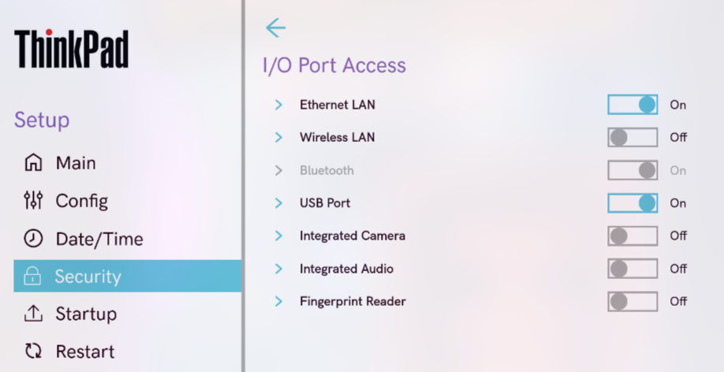
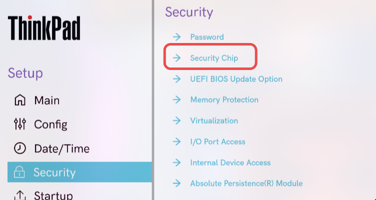

1.1. Contraseña de usuario o Power-On
El objetivo es evitar el acceso no autorizado al equipo antes del arranque del sistema operativo.
Pasos
Reinicia el ordenador y accede al menú BIOS/UEFI (usualmente presionando Supr, F2, Esc o F10 según el fabricante).

Dirígete al apartado Security o Seguridad.

Busca la opción User Password, Power-On Password o similar.

Introduce una contraseña segura que combine letras, números y símbolos.
Guarda los cambios y reinicia el sistema.

El sistema pedirá una contraseña antes de iniciar el arranque.
1.2. Contraseña de administrador
El objetivo es restringir el acceso y las modificaciones a la configuración de la BIOS/UEFI.
Pasos
Ingresa nuevamente al menú BIOS/UEFI.
En la sección Security, selecciona Administrator Password o Supervisor Password.

Guarda los cambios y reinicia el equipo.
Solo quien conozca la contraseña de administrador podrá modificar la configuración del BIOS/UEFI.
1.3. Arranques externos
El objetivo es vitar que el sistema se inicie desde dispositivos externos (USB, DVD, etc.) que puedan contener software malicioso.
Pasos
Accede al BIOS/UEFI.
Busca la sección Boot, Boot Options o Advanced Boot Options.

Desactivar Boot Device List F12 Option y Boot Order Lock
Guarda los cambios.
Gracias a esto el equipo no podrá arrancar desde medios externos sin autorización previa
1.4. Orden de arranque
El objetivo es asegurar que el sistema operativo principal sea el primero en arrancar y evitar manipulaciones.
Pasos
Entra al BIOS/UEFI y localiza la pestaña Boot.
Establece como primera opción de arranque el disco donde está instalado el sistema operativo.

Mueve cualquier otro dispositivo (USB, CD/DVD, red, etc.) fuera de la lista
Guarda los cambios.
El sistema solo iniciará desde el disco autorizado.
1.5. Otras opciones de seguridad
El objetivo es aplicar configuraciones adicionales que fortalezcan la seguridad general del BIOS/UEFI.
Recomendaciones
Activar Secure Boot porque garantiza que solo se carguen sistemas operativos y controladores firmados digitalmente.


Desactivar puertos innecesarios que no se usan o necesitan


Habilitar TPM (Trusted Platform Module) para cifrado de disco BitLocker, LUKS, también para Windows Hello y arranque seguro
